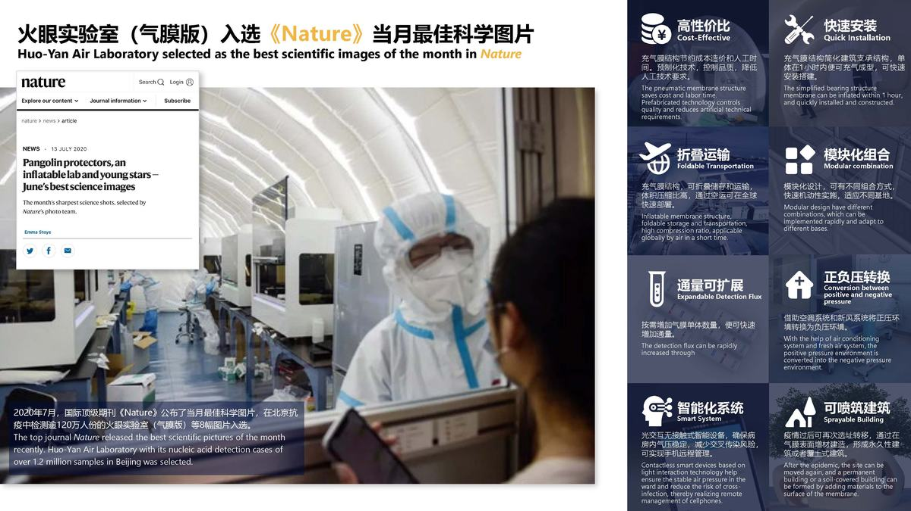
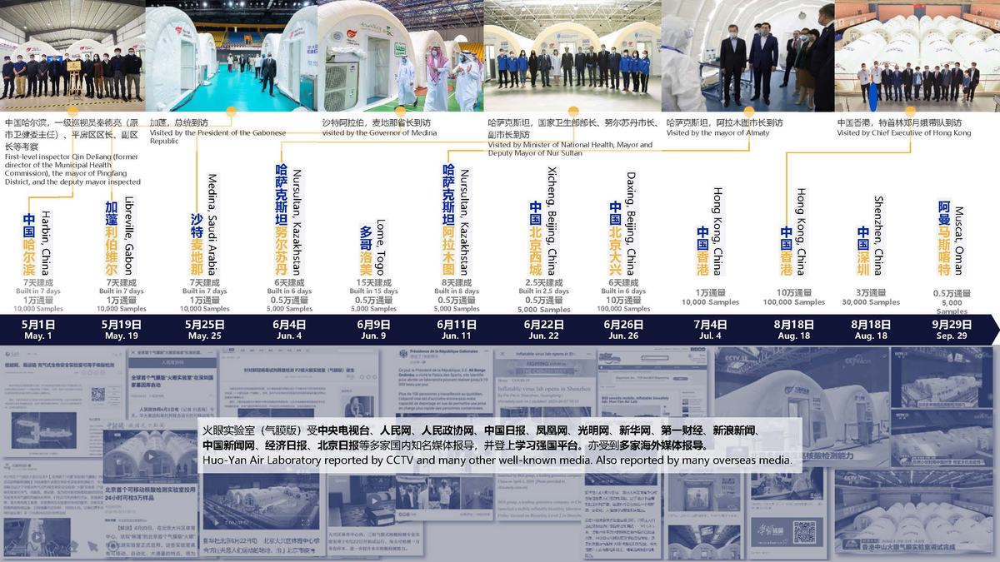
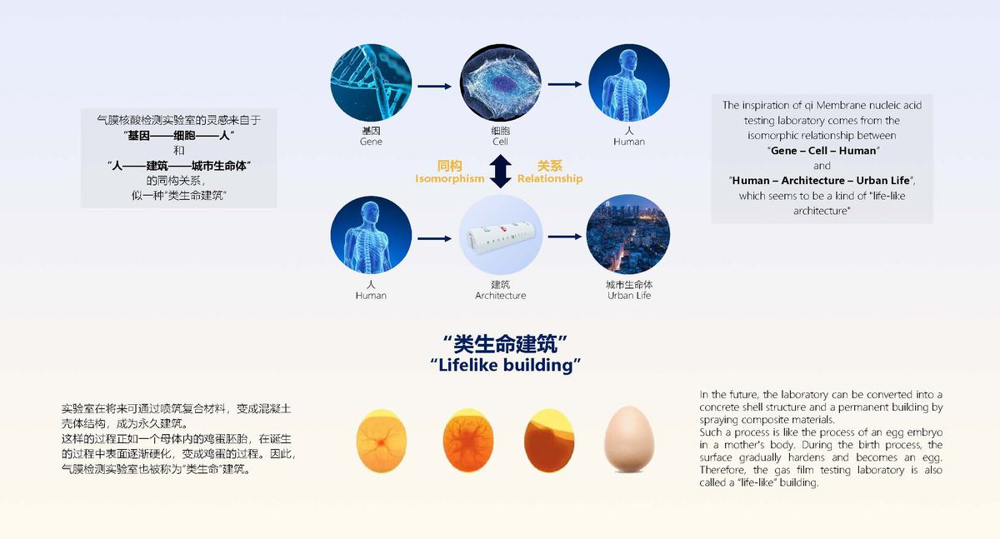

2019年底爆发的新型冠状病毒疫情已蔓延至全球，世界公共卫生安全面临极大挑战。面对全球百年来最大的公共卫生危机，世界卫生组织明确表示：新冠疫情防控过程中最关键的环节在于检测，所有疑似病例都需要检测，一定要把检测作为重中之重，核酸检测实验室作为关键性的医疗资源，直接影响了各国应对疫情的管控能力。传统BSL-2（生物安全二级）核酸检测实验室存在建设实施成本较高、建造周期较长、安装难度高、无法打包储备的问题。因此，如何在病毒快速传播期间，快速有效地提供一种快速量产、成本较低、方便运输、安装简易、方便储存的可移动核酸检测实验室显得尤为重要。
同济大学设计创意学院和华大基因及易托邦共同设计研发了气膜版的病毒核酸检测实验室——火眼实验室（气膜版），可实现实验室的模块化设计，有利于对设备进行集中化管理，且充气膜结构通过充气可形成屋体或管状体，有利于实现充气膜结构病毒检测实验室的快速搭建，使充气膜结构病毒检测实验室尽快投入使用；此外，高污染区为负压环境，有利于保证实验人员检测病毒时的使用安全性。
气膜火眼实验室已在中国的北京、哈尔滨、深圳、香港、青岛，仅需几天火速建成的万级通量规模核酸检测实验室，为各地突发疫情防控贡献了数百万例新冠检测，及时精准高效的排查有助于最大限度地缓解社会危机；海外的加蓬、沙特、多哥、哈萨克斯坦、埃塞俄比亚和阿曼建成，显著提升了当地的核酸检测能力，从而助力全球疫情防控。截至目前，已在全球7个国家启动了14座气膜版火眼实验室，包括国内7座，国际7座，合计建设日检测通量达35万例。沟通推进中的意向共19个，分布在10个国家。气膜实验室运行产生的经济效益已在3000万元以上，且本实验室为大量的核酸检测试剂提供了空间载体，整个项目产生的经济效益上亿。
从2月份至今从已申请相关系列专利14项，4项实验室资质，并于2020年7月3日，深圳市标准化协会发布了《充气膜结构病毒检测实验室建设指南》团体标准，该标准在国际及国内均属首次提出，对新型冠状病毒疫情的防控具有重要指导意义，也填补了该领域的空白。此外，实验室被海内外多家知名媒体报道，北京的气膜火眼实验室还入选了国际顶级期刊《Nature》6月最佳科学图片，产生了极大的国际影响力。
“气膜”火眼实验室是用充气膜结构形成符合BSL-2级要求的实验室，其灵感来自于“基因——细胞——人”和“人——建筑——城市生命体”的同构关系，似一种“类生命建筑”，拥有美感、未来感和科技感，具有全国产、低能耗、智能化、可收纳、可空运等优点。在病毒快速传播期间，气膜结构的实验室能够实现快速量产、成本较低、方便运输、安装简易、方便储存，大大降低了建设传统建筑的能耗；新风系统的智能舱压控制系统实现室内各功能区的正负压转换，以达到实验室的空气环境标准要求；并配以智能化设备，增加建筑体系的智慧化，利用光交互技术实现工作人员无接触开门、开关设备的操作。未来该实验室可以通过喷筑复合材料，变成混凝土壳体结构，成为永久建筑。
火眼实验室（气膜版）充分考虑全球生物安全要求和行业规范，采用阻燃、耐磨、稳定性高的PVC材料作为建筑主材，以气膜结构进行模块化布局，共设置四大功能区，包括了样本接收区、试剂准备区、样本制备区和扩增区，并配备了光交互门禁系统、医废出口、缓冲间、更衣间等辅助转换空间，装配有Class II生物安全柜、全自动核酸制备仪、QPCR仪等新冠病毒核酸检测设备，未来可扩充抗体检测设备、基因测序仪、高性能服务器等先进实验室设备。
人流和物流和垃圾流向：
① 人流出入口采用入口缓冲区→入口更衣区→样本接收区/标本制备区/扩增区→出口更衣区→入口缓冲区流向管理。
② 试剂出入口采用入口缓冲区→入口更衣区→标本制备区流向管理。
③ 设备出入口采用样本接收区/标本制备区/扩增区的通道门流向管理。
④ 样本出入口采用标本接收区→标本制备区→扩增区的传递窗流向管理。
⑤ 垃圾出口采用样本接收区/标本制备区/扩增区的专用垃圾传递窗流向管理。
（1）气膜建筑
本气膜建筑采用双层充气膜结构，在双膜外壳之间进行充气，形成气柱以起到支撑整个气膜建筑的作用，后期维护只需利用智能充气泵根据气膜内气压自动进行补气。因气膜只需充气便可快速成型，气膜建筑的搭建过程和后期运营耗能都比传统建筑大大减少。气膜建筑后期基本不需要维护，为持续性高水准、低成本经营提供保障。因此气膜实验室具有极高的经济性。
白色气膜搭配灯带，简约干净，搭配室内智能化设备，充满未来感、太空感和仪式感。气膜建筑内部同样具有舒适性，气膜建筑系统的内部空间中，气压、温度、湿度、新风量、照度等皆可按需控制，提供舒适宜人的室内环境。有效利用膜材对光的高反射率为建筑内部提供均匀、无晃眼的照明效果。并且气膜实验室两侧设置了透光膜的可视窗，能够达到日间充分利用自然光的效果。因此应用膜结构搭建气膜实验室均可满足生物安全实验室节能、环保和舒适性的要求。
主体采用PVC夹网布，具有易成型、防风雨、防潮湿、抗紫外线、阻燃的特点，并用热合技术确保气膜结构密闭性。使用环境也可满足不同地区的环境条件，既可放在室内，也可放在室外。且经实践检测，本气膜实验室的抗风等级：9级；最大积雪载荷45kg/m2；耐温：-40℃～120℃；阻燃性能等级：B1 (B-s1)；抗紫外线等级：灰级等级4。
（2）高体积压缩比以便空运
气膜建筑高体积压缩比，可以利用空运进行运输，能够快速适应运输时间要求，即便是陆运，有限的空间内也可放置多个气膜。如用集装箱的解决方案，占用的空间大，空运承载量有限，只能用铁路运输或者轮船海运。而要运到海外国家，尤其是欠发达的国家和地区，首先要确保有铁路可通行，而采用轮船运输，则会大大增加运输时间。
（3）充气结构可快速搭建、灵活布局
气膜实验室通过充气膜结构和预制化建造系统结合，确保整个系统密闭，气膜被内部气压顶起，大大简化了建筑支承的结构。一个气膜实验室利用智能充气设备充气，只需要20分钟，便可完成充气，挺立成型。因其膜结构特性，设置灵活，对搭建场地基础要求低，可适应不同的基地，室内室外均可，并且可随时搬迁。气膜自重轻，可建筑于原有建筑之上，如在室外则需要考虑当地环境影响的因素。并且，根据疫情不确定性的局势，如果需要突然增加通量需求，也可快速搭建起多个新的气膜实验室，而如果是传统检测实验室，就不能做到应对突发公共卫生事件的快速响应。
（4）新风系统正负压转换的实现
气膜检测实验室的功能区是通过膜结构将其分开，并和气压差分区相结合，从而实现人流、物流和垃圾流的有效分离。空调系统可调节的室内温湿度，再通过设置新风机与排风机，形成内部气流的定向流动。空气的进入与排出均经过HEPA高效过滤，并且在气体排出环境前做消杀工作。空调产生的冷凝水和洗手池排放的污水也会被分别收集在污水箱并放入消毒片经由无害化处理后排放。
新风系统可实现室内正负压的转换，通过利用智能自动风阀控制新风机的送风风量和排风机的排风风量，例如当送风量低于排风量时即可实现负压环境，不同的控制方法使病房不同功能区形成不同气压差，经实践验证，此系统的正负压转换值为±30Pa。
根据生物实验室相关规范的设计要求，在每个单体气膜建筑内，前后门设置了缓冲区、前门处的入口更衣间和出口更衣区。工作人员开启前门首先进入缓冲区，缓冲区内设置了洗手池；再从缓冲区进入更衣区穿防护服，然后进入到核心工作间；工作人员离开核心工作间时首先进入出口更衣区脱换防护服，再进入到缓冲区，然后从前门离开。同样，根据生物安全实验室的设计规范，实验室安装的独立送排风系统，应确保在实验室运行时气流由低风险区向高风险区流动，同时确保实验室空气只能通过高效过滤器（本项目采用HEPA）过滤后经专用的排风管道排出。因此气压压力值关系如下：入口更衣区＞缓冲区＞出口更衣区＞核心工作间。同时根据相关规范要求，设定了不同区域具体的正负压参数值。
新风机与排风机内的HEPA网等级越高，能过滤的颗粒物直径越小，过滤效果越好。目前市面上普通的空气净化器采用的是H9、H10级别的HEPA网，中高端的空气净化器普遍采用的是H12级别的HEPA网。本次设计新风机与排风机的滤网由三层滤网组成，以确保实验室空气的高效过滤。第一层滤网初效过滤灰尘大颗粒物毛发等，能够有效过滤净化空气，过滤等级为G4；第二层滤网除异味除湿细菌雾霾甲醛等；第三层滤网高效HEPA可高效过滤去除PM2.5雾霾杀菌等，过滤等级为H12。
（5）智能化技术集成与应用
光交互技术又叫光通讯，通过光闪传递信息。光交互技术的优势在于：属于暗码通讯，且每次传输的信息都会更新，安全性高；光交互通过闪光灯传递信息，无需额外硬件，接收端的硬件成本也很低；光交互速度快，一闪即可，无需额外操作步骤。基于公安部CTID，实现了实人认证，能够为医务人员提供有效的免接触实人认证。
基于光交互技术，定制开发了智能集成设备，并且可通过一款功能集成的手机软件，对各个舱体内的所有智能设备的数据进行查看和管理，还可通过此软件实现闪光开门、控制灯光等操作。除了管理智能设备的集成手机软件，还可运用鲁班BIM软件进行智慧化运营管理。集成模型状态产品资料、安装工艺流程视频和图片展示、流程审批等多个功能，模型构建与相关信息可进行关联，并可生成二维码，直接贴于物品上，扫码即可读取资料。
① 智能门
每个舱体前后门都安装了光交互智能门，门侧边的魔术贴可直接与主体气膜膜材连接，以保证气密性。光交互智能门通过路由器提供的网络接入互联网，可将开门信息/门禁权限管理/访客管理等信息上传到云端，实现在线管理；同时路由器还可以为其他智能设备提供网络。
智能前门作为主要的出入口，在门上高度集成了环境采集器、新风面板、光交互门禁和灯控无线开关。工作人员可以使用手机软件开门，也支持输入门禁密码，或者利用光ID闪光开门，这样就可保证了工作人员无接触开门。室内灯带利用无线网进行开关控制，并且在白天可使用半开模式，以节省能源。环境采集器检测到室内的二氧化碳含量、PM2.5值、挥发性有机化合物含量、温湿度等空气质量指数，将在新风面板上显示，以保证达到P2实验室的环境参数要求。智能后门作为紧急出口，装有紧急开关门按钮，以便工作人员及时逃生。
② 传递窗
根据生物实验室“专门设计以确保存储、转运、收集、处理和处置危险物料的安全”的规定，我们设置了不同的传递窗。样本接收区一侧安装了样本接收传递窗；样本接收区和制备区之间、制备区和扩增区之间设置了连接两个区域的传递窗；每个舱体内都各在后门处设置了垃圾传递窗。每个传递窗内都有紫外线消杀灯对传递物进行消杀；传递窗的门锁采用了光交互技术，输入密码或者利用光ID闪光便可开启；传递窗一侧打开时另一侧会自动保持闭锁状态；窗锁遇断电常闭，以免造成污染物泄露；常闭状态下可用螺丝刀戳入应急孔开启窗门。
③ 舱压控制系统
舱压智能控制柜是各个功能区气压控制的一套系统，舱压控制柜外的触控显示屏可展示运行状态和设置数值。自动模式下可根据用户设定的压差值随时自动调节风阀的开合度，从而实现功能区与室外压差的自动控制，使压差稳定在设定值。用户也可手动设定的风阀开合度以及新风机的风速来控制功能区压差。舱压控制系统可通过手机集成软件远程监控系统运行情况，获知当前各个功能区与室外大气压压差值。



火眼实验室(气膜版),快速搭建核酸检测能力
应急建筑的模块化设计
疫情检测直接守护公共健康,全球推广
应急医疗设施新品类,海外输出
「中国速度」抗疫的国民记忆符号